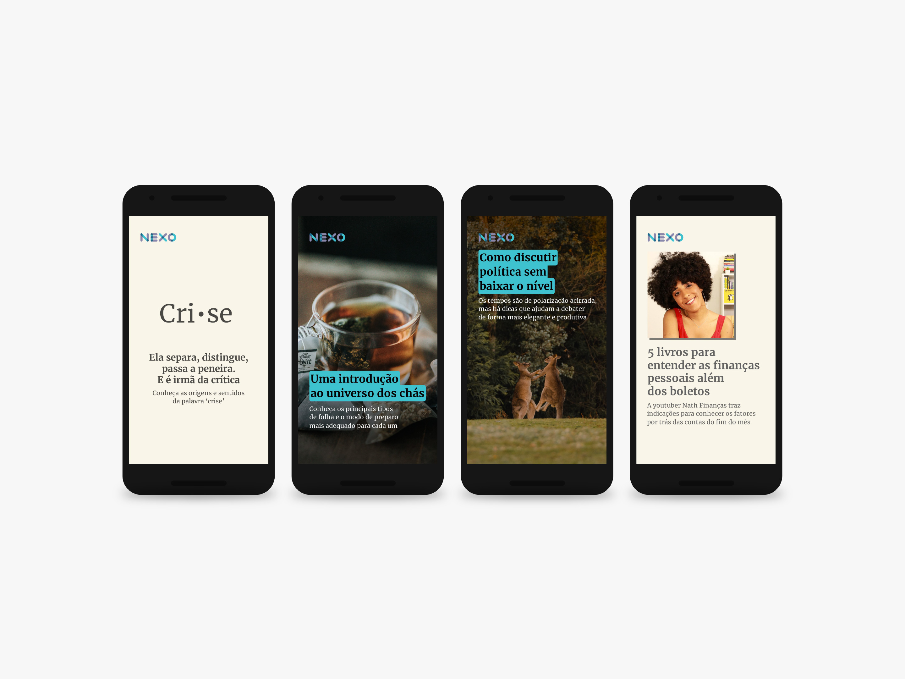
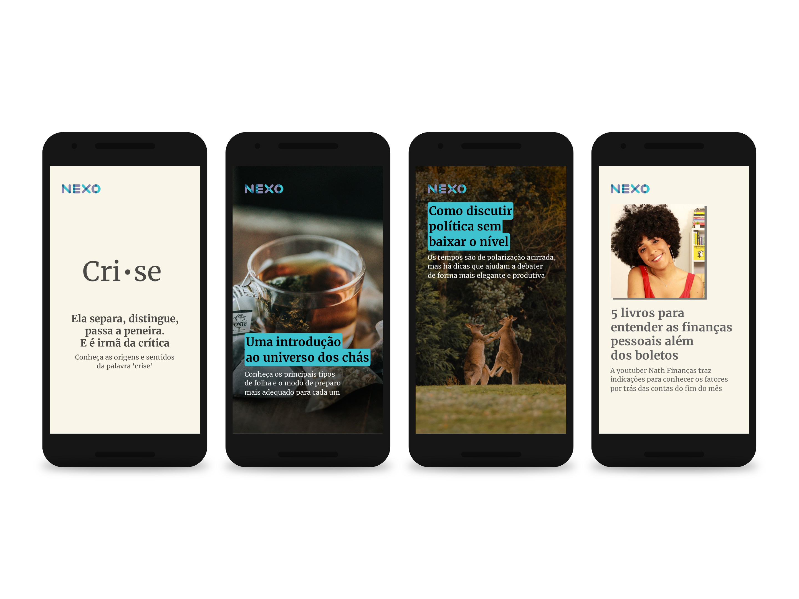

politiquês
nexo jornal — 2017-2019
O Politiquês é um podcast do Nexo Jornal para falar de política — não de seus fatos, mas de suas ideias, conceitos e definições. Cada episódio trata de um tema essencial para compreender o que é, afinal, a política — seja em sua forma institucionalizada, ou no dia a dia dos cidadãos.
Cada semana trazia um desafio: como ilustrar sem ser óbvio, despertando a curiosidade do ouvinte e fazendo da imagem não só um acompanhamento do texto, mas uma pergunta em si própria.
Desenvolvi a identidade visual e produzi a maior parte das imagens que ilustram cada episódio.
Este projeto foi desenvolvido usando as ferramentas Adobe Illustrator e Adobe Photoshop, sob a direção de Guilherme Falcão e Conrado Corsalette